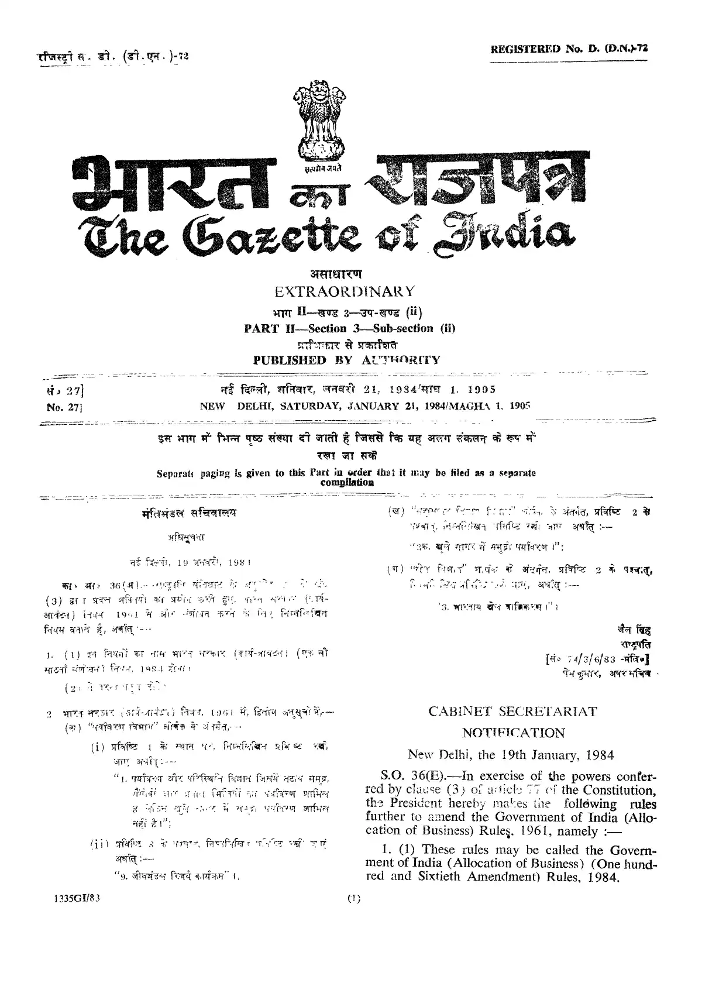
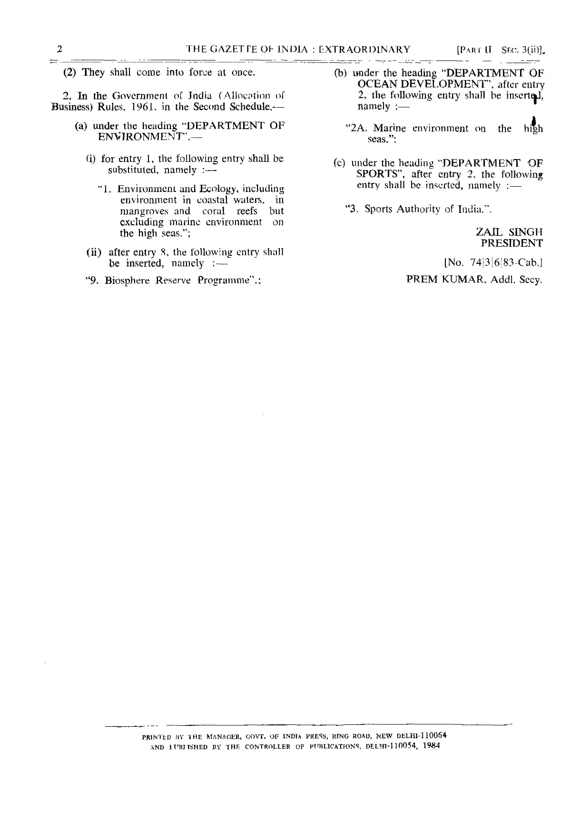

Amendment #160 (S.O. 36(E), 1984)
4 changes: 0 to the First Schedule, 4 to the Second Schedule. 4 applied
The order, page by page
Page 1 of 2

Page 2 of 2

1234Schedule 2 › DEPARTMENT OF ENVIRONMENT › entry 1
- 1. Environment and Ecology, including environment in coastal waters, in mangroves and coral reefs but excluding marine environment on the high seas.
applied at schedule 2 › department *DFPARTMENT OF ENVIRONMENT › entry 1 in the Rules after #160
states inferred loose
after Schedule 2 › DEPARTMENT OF ENVIRONMENT › entry 8
- 9. Biosphere Reserve Programme“.
applied at schedule 2 › department *DFPARTMENT OF ENVIRONMENT › entry 9 in the Rules after #160
states inferred loose
after Schedule 2 › DEPARTMENT OF OCEAN DEVELOPMENT › entry 2
- 2A. Marine environment on the high seas.
applied at schedule 2 › department DEPARTMENT OF OCEAN DEVELOPMENT › entry 2A in the Rules after #160
after Schedule 2 › DEPARTMENT OF SPORTS › entry 2
- 3. Sports Authority of India.
applied at schedule 2 › ministry DEPARTMENT OF SPORTS › entry 3 in the Rules after #160
How this document was read
Changes placed by an inference rule
| Change | Rule | Status | What |
|---|---|---|---|
| 1 | loose | accepted | change 1: department DEPARTMENT OF ENVIRONMENT taken for department *DFPARTMENT OF ENVIRONMENT, named loosely |
| 2 | loose | accepted | change 2: department DEPARTMENT OF ENVIRONMENT taken for department *DFPARTMENT OF ENVIRONMENT, named loosely |
From the Government of India (Allocation of Business) Rules, 1961 and their amendments, as published by the Cabinet Secretariat (cabsec.gov.in), read by orgpedia. The readings of the older scanned gazettes have known gaps.